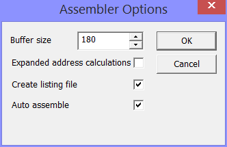

You reach the MMIX assembler options through the Options menu.
This edit control determines the assemblers buffer size for source lines (the -b command line option of mmixal). Longer lines in the source file will be truncated with a warning showing up in the assembler output window.
If this box is checked, the MMIX assembler will use four instructions to load any required address into register $255. This will make `GREG @´ instructions unnecessary but yields larger and slower code.
If this box is checked, the assembler will produce a listing file. The name of the listing file is the name of the source file with the extension `.mms´ replaced by `.mml´.
Whenever the debugger starts, it will check whether there is an object file and whether it is newer than the source file. If this is not the case, it might be appropriate to assemble the source file.
If this check box is checked, the source file will be assembled aoutomatically.
If the box is not checked, a message box will pop up and ask he user whether the source file should be assembled before starting the debugger.